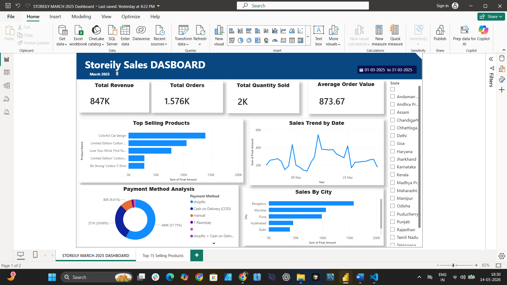

Storeily Sales Dashboard
Power BIBuilt an ecommerce sales dashboard using Power BI to monitor revenue, orders, quantity sold, payment methods, top-selling products, and sales trends.
Business Insights: Identified top-performing products, tracked revenue trends, compared payment methods, and analyzed city-wise sales contribution.
Tools Used: Power BI, Power Query, DAX, Excel

Inventory & Dispatch Tracker Dashboard
Power BICreated an inventory and dispatch monitoring dashboard to track order status, warehouse performance, low stock alerts, and revenue trends.
Business Insights: Monitored pending and returned orders, identified low-stock products, and compared warehouse-wise operational performance.
Tools Used: Power BI, DAX, Data Modeling